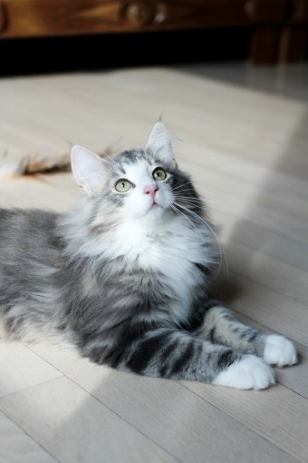
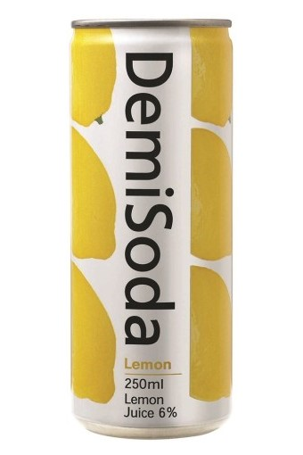

<!DOCTYPE html>


</script>
</head>
<body>
<h1 id="clockDisplay"></h1>
</body>
</html>

<hr id="about">
<html>
<title>20181637 한상민</title>
<meta charset="UTF-8">
<meta name="viewport" content="width=device-width, initial-scale=1">
<link rel="stylesheet" href="https://www.w3schools.com/w3css/4/w3.css">
<link rel="stylesheet" href="https://fonts.googleapis.com/css?family=Karma">
<style>
body,h1,h2,h3,h4,h5,h6 {font-family: "Karma", sans-serif}
.w3-bar-block .w3-bar-item {padding:20px}
</style>
<body>

<!-- Sidebar (hidden by default) -->
<nav class="w3-sidebar w3-bar-block w3-card w3-top w3-xlarge w3-animate-left" 
style="display:none;z-index:2;width:40%;min-width:300px" id="mySidebar">
  <a href="javascript:void(0)" onclick="w3_close()"
  class="w3-bar-item w3-button">메뉴 닫기</a>
  
  <a href="#about" onclick="w3_close()" class="w3-bar-item w3-button">자기 소개글</a>
  <a href="#food" onclick="w3_close()" class="w3-bar-item w3-button">내가 좋아하는 것들</a>
</nav>

<!-- Top menu -->
<div class="w3-top">
  <div class="w3-white w3-xlarge" style="max-width:1200px;margin:auto">
    <div class="w3-button w3-padding-16 w3-left" onclick="w3_open()">☰</div>
    <div class="w3-right w3-padding-16">E-Mail : sangmin1453@naver.com</div>
    <div class="w3-center w3-padding-16">MY HOMEPAGE</div>
  </div>
</div>


<!-- !PAGE CONTENT! -->
<div class="w3-main w3-content w3-padding" style="max-width:1200px;margin-top:100px">

<div class="w3-container w3-padding-32 w3-center">  
  <h3>나를 소개합니다!</h3><br>
  
  <div class="w3-padding-32">
    <h4><b>안녕하세요! 반갑습니다!</b></h4>
    <h6><i>저는 컴퓨터공학과 18학번 한상민 입니다.</i></h6>
    <p>안녕하세요 저는 23살 동서대학교 컴퓨터공학과에 재학중인 한상민 입니다. 저는 1999년 10월 28일에 경기도 여주시에서 태어났습니다. 저는 13살에 경남 김해로 전학을 와서 진례중학교를 졸업하였고,
      장유고등학교로 진학하였습니다. 장유고등학교를 졸업한 후에 2018년에 동서대학교 컴퓨터공학부에 입학하였으며 2019년6월 부터 2021년 1월 까지 
    국방의 의무를 다하고 다시 동서대학교로 복학 하였습니다. 이상으로 소개글을 마치겠습니다. </p>
  </div>
  
  <hr>
  
  <!-- First Photo Grid-->
  <div class="w3-container w3-padding-32 w3-center">
    <h3>내가 좋아하는 것들</h3><br><hr id="about">
  </div>
  <div class="w3-row-padding w3-padding-16 w3-center" id="food">
    <div class="w3-quarter">
      
      <h3>면요리</h3>
      <p>저는 어렸을 때 부터 면요리를 참 좋아했습니다. 자장면,냉면,막국수,밀면,라면...등등 먹기도 편하구 말이죠.</p>
    </div>
    <div class="w3-quarter">
      
      <h3>고양이</h3>
      <p>저는 강아지보다는 고양이가 좀더 귀엽더라구요. 그 중에서도 노르웨이숲 고양이를 가장 좋아합니다. 털이 북실북실한게
        기분이 안좋을 때 쓰다듬으면 기분이 풀릴 것 같아요.
      </p>
    </div>
    <div class="w3-quarter">
      
      <h3>탁구</h3>
      <p>탁구는 고등학교때 우연히 치게 되었는 데 어쩌다보니 점심시간 저녁시간 에도 항상 치게되었고, 군복부중에 자율체력단련 시간
        때도 항상 탁구를 쳤던 기억이 나네요.
      </p>
      <p></p>
    </div>
    <div class="w3-quarter">
      
      <h3>게임</h3>
      <p>저는 남는 시간에 주로 게임을 합니다. 주로 하는 게임은 리그 오브 레전드 또는 로스트아크 이 두가지를 주로 즐겨 해요. </p>
    </div>
  </div>
  
  <!-- Second Photo Grid-->
  <div class="w3-row-padding w3-padding-16 w3-center">
    <div class="w3-quarter">
      
      <h3>가수</h3>
      <p>저는 고등학교 때 부터 아이유의 노래를 들었어요. 노래를 부르는 스타일이과 목소리가 너무 좋아서 
        아직까지도 아이유를 팬으로서 좋아합니다.</p>
    </div>
    <div class="w3-quarter">
      
      <h3>과자</h3>
      <p>제가 제일 좋아하는 과자인 눈을 감자 입니다. 짭조름하고 양도 적당해서 물리지도 않고 맛있습니다.</p>
    </div>
    <div class="w3-quarter">
      
      <h3>음료수</h3>
      <p>저는 레몬향을 좋아해서 레몬향이 나는 음료수 대부분을 좋아합니다. 그 중에서도 특히 데미소다 레몬이 제일 
        맛있는거 같아요.
      </p>
    </div>
    <div class="w3-quarter">
      
      <h3>계절</h3>
      <p>저는 덥고 습한걸 정말 싫어해서 차라리 벌레도 없고 덥고 습하지도 않은 겨울이 좋더라구요.</p>
    </div>
  </div>

  <!-- Pagination -->
  <div class="w3-center w3-padding-32">
    <div class="w3-bar">
      <a href="index" class="w3-bar-item w3-button w3-hover-black">«</a>
      <a href="index" class="w3-bar-item w3-black w3-button">1</a>
      <a href="page2" class="w3-bar-item w3-button w3-hover-black">2</a>
      <a href="page3" class="w3-bar-item w3-button w3-hover-black">3</a>
      
      <a href="page2" class="w3-bar-item w3-button w3-hover-black">»</a>
      
    </div>
  </div>
  
  

 
  
  
<script>
// Script to open and close sidebar
function w3_open() {
  document.getElementById("mySidebar").style.display = "block";
}
 
function w3_close() {
  document.getElementById("mySidebar").style.display = "none";
}
</script>

</body>
</html>
